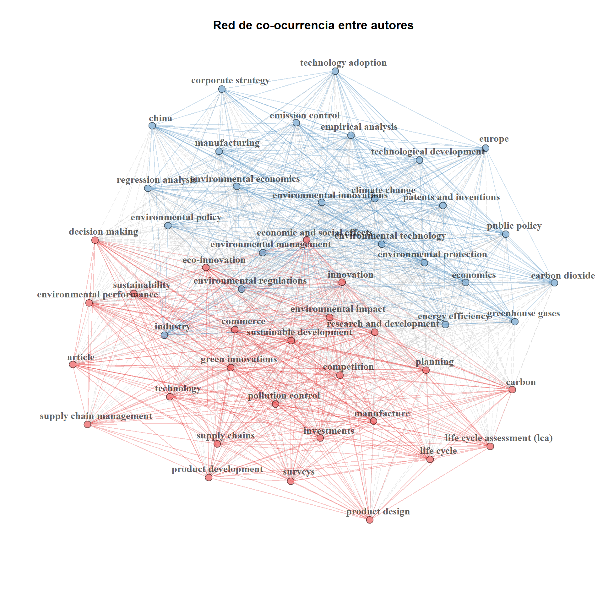
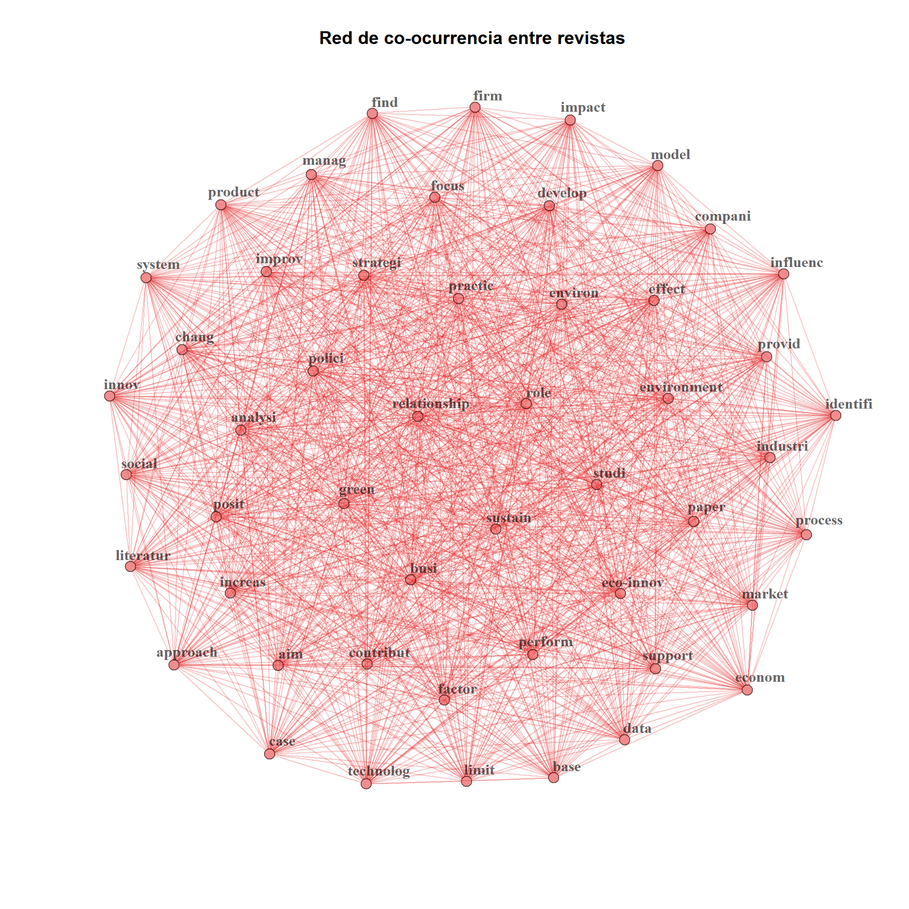
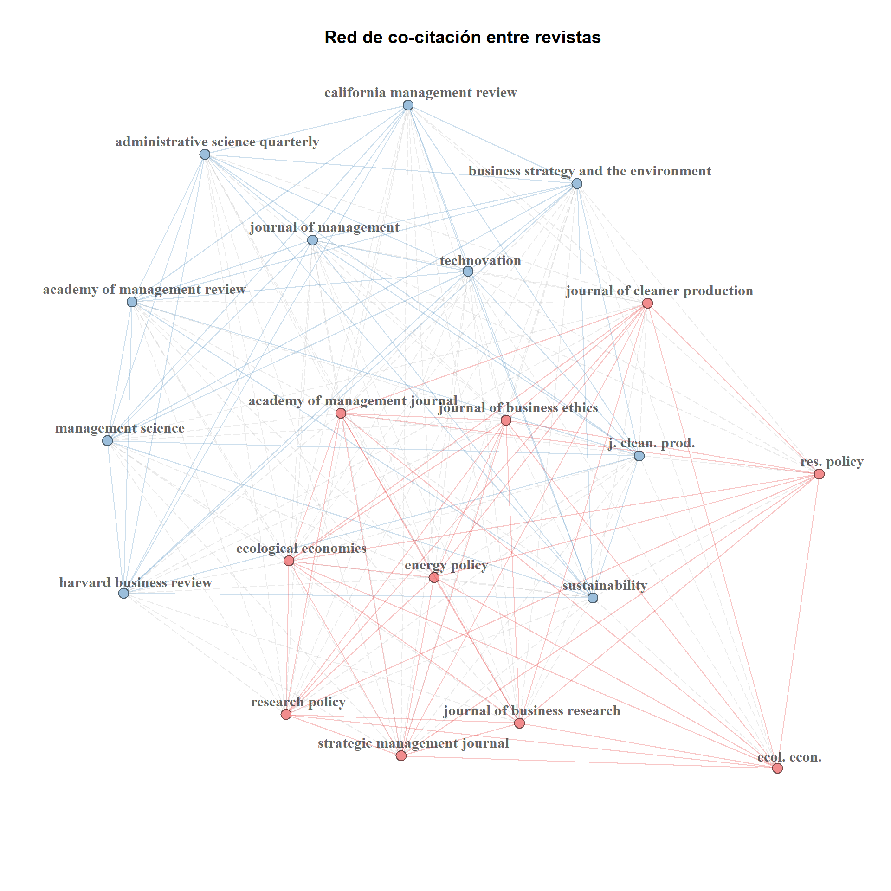

Redes de conocimiento
library(bibliometrix)
library(dplyr)
library(ggplot2)
library(kableExtra)
# Definir el directorio de trabajo
setwd("C:/Users/User/Google Drive/Web_pages/example_ecoinnov_290620")
# Base de datos
df <- convert2df("ecoinnov_290620.bib", dbsource="scopus", format="bibtex")
Estructura intelectual
La estructura intelectual se refiere a la manera en que están relacionados los documentos que representan la base de conocimiento de un área de investigación. Se compone de las publicaciones fundamentales para llevar a cabo la investigación actual. La estructura intelectual puede subdividirse en estructura social, conceptual y el conocimiento intelectual. A su vez, cada tipo de estructura utiliza diferentes técnicas bibliométricas para representar su estructura. Estas técnicas emplean diferentes unidades de observación dentro de los documentos.
2. Estructura conceptual
La estructura conceptual representa la conexión entre palabras que aparecen en el mismo documento. Esta conexión puede ser las palbras clave, los abstracts o los títulos.
2.1. Red de palabras clave
ck <- biblioNetwork(df, analysis = "co-occurrences", network = "keywords", sep = ";")
ck1 <- networkPlot(ck, n = 50, Title = "Red de co-ocurrencia entre autores", type = "auto", labelsize = 1)
2.2. Red de palabras de abstracts
df <- termExtraction(df, Field = "AB", stemming = T, language = "english", keep.terms=NULL, verbose=T)cs <- biblioNetwork(df, analysis = "co-occurrences", network = "abstracts", sep = ";", shortlabel = T)
cs1 <- networkPlot(cs, n = 50, Title = "Red de co-ocurrencia entre revistas", labelsize = 1)
3. Estructura intelectual
La estructura intelectual refleja la medida de influencia de las unidades de análisis. En la medida que haya más citaciones representa más influencia de la unidad de análisis. Las principales mediciones de la estructura intelectual son la co-citación de autores, revistas y referencias.
3.1. Co-citación de autores
coa <- biblioNetwork(df, analysis = "co-citation", network = "references", sep = ";")
coa1 <- networkPlot(coa, n = 50, Title = "Red de co-citación entre referencias", labelsize = 1)3.2. Co-citación de revistas
df <- metaTagExtraction(df, Field="CR_SO")
cos <- biblioNetwork(df, analysis = "co-citation", network = "sources", sep = ";")
cos1 <- networkPlot(cos, n = 20, Title = "Red de co-citación entre revistas", labelsize = 1)
3.3. Mapa historiográfico
h <- histNetwork(df, min.citations = 10, sep = ";", network = T, verbose = T)histPlot(h, n = 30, size = 5, labelsize = 7, verbose = T)##
## Legend
##
## Label Year LCS GCS
## 1 XIE X, 2019, J BUS RES 2019 10 32
## 2 KUSI-SARPONG S, 2019, INT J PROD RES 2019 1 39
## 3 SCARPELLINI S, 2018, J CLEAN PROD 2018 4 16
## 4 ZUBELTZU-JAKA E, 2018, BUS STRATEGY ENVIRON 2018 15 22
## 5 MELANDER L, 2018, BUS STRATEGY ENVIRON 2018 8 22
## 6 SANNI M, 2018, TECHNOL FORECAST SOC CHANGE 2018 7 20
## 7 KIEFER CP, 2018, BUS STRATEGY ENVIRON 2018 6 15
## 8 MELANDER L, 2017, BUS STRATEGY ENVIRON 2017 9 30
## 9 DANGELICO RM, 2017, BUS STRATEGY ENVIRON 2017 6 28
## 10 DANGELICO RM, 2017, BUS STRATEGY ENVIRON 2017 28 102
## 11 TARIQ A, 2017, TECHNOL SOC 2017 7 24
## 12 GUPTA H, 2017, J CLEAN PROD 2017 3 129
## 13 DANGELICO RM, 2016, BUS STRATEGY ENVIRON 2016 44 127
## 14 JAKOBSEN S, 2016, J CLEAN PROD 2016 6 33
## 15 DORAN J, 2016, BUS STRATEGY ENVIRON 2016 44 89
## 16 GHISETTI C, 2015, ECOL ECON 2015 25 63
## 17 DAZ-GARCA C, 2015, INNOV MANAGE POLICY PRACT 2015 42 93
## 18 MARN-VINUESA LM, 2020, ORGAN ENVIRON 2020 0 2
## 19 WU Y, 2020, J CLEAN PROD 2020 0 0
## 20 HOFMAN PS, 2020, BUS STRATEGY ENVIRON 2020 0 0
## 21 ZHANG M, 2020, IND MARK MANAGE 2020 0 0
## 22 DI PAOLA N, 2020, EUR J INNOV MANAGE 2020 0 0
## 23 MALDONADO-GUZMN G, 2020, INT J INNOV SCI 2020 0 0
## 24 BITENCOURT CC, 2020, J CLEAN PROD 2020 0 2
## 25 JUN W, 2019, EUR J INNOV MANAGE 2019 0 0
## 26 KOBARG S, 2020, IND INNOV 2020 0 0
## 27 LIAO Z, 2018, BUS STRATEGY ENVIRON-a NA NA NA
## 28 BORSATTO JMLS, 2019, RESOUR CONSERV RECYCL 2019 0 6## IGRAPH 3ba6020 DN-- 27 48 --
## + attr: name (v/c), id (v/c), size (v/n), years (v/n), color (e/c)
## + edges from 3ba6020 (vertex names):
## [1] XIE X, 2019, J BUS RES ->ZHANG M, 2020, IND MARK MANAGE
## [2] XIE X, 2019, J BUS RES ->DI PAOLA N, 2020, EUR J INNOV MANAGE
## [3] SCARPELLINI S, 2018, J CLEAN PROD ->MARN-VINUESA LM, 2020, ORGAN ENVIRON
## [4] ZUBELTZU-JAKA E, 2018, BUS STRATEGY ENVIRON->WU Y, 2020, J CLEAN PROD
## [5] ZUBELTZU-JAKA E, 2018, BUS STRATEGY ENVIRON->HOFMAN PS, 2020, BUS STRATEGY ENVIRON
## [6] ZUBELTZU-JAKA E, 2018, BUS STRATEGY ENVIRON->BITENCOURT CC, 2020, J CLEAN PROD
## [7] MELANDER L, 2018, BUS STRATEGY ENVIRON ->HOFMAN PS, 2020, BUS STRATEGY ENVIRON
## [8] SANNI M, 2018, TECHNOL FORECAST SOC CHANGE ->WU Y, 2020, J CLEAN PROD
## + ... omitted several edges